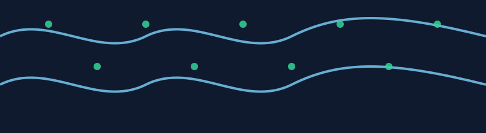

Wortmarke AuroraFlow
AURORAFLOW
Der Name steht für einen ruhigen Arbeitsfluss. Projekte sollen sich nicht wie Chaos anfühlen. Der Begriff Aurora steht für Orientierung. Flow steht für einen klaren Ablauf.
AuroraWare ist ein Software-Start-up mit Sitz in Wien. Derzeit sind wir sechs Mitarbeitende, die gemeinsam die Entwicklung und den Vertrieb unserer Software verantworten. Wir entwickeln Werkzeuge, die Teams im Projektalltag entlasten und Zusammenarbeit einfacher machen. Unser Fokus liegt auf klaren Abläufen, verständlicher Dokumentation und einer Oberfläche, die intuitiv und ohne Umwege nutzbar ist. AuroraFlow ist unser erstes Produkt und richtet sich an Agenturen, kleine Unternehmen und Selbstständige.
Unsere Produkte werden über diesen Webshop vertrieben. Der Kauf erfolgt als Abo. Updates sind während der Laufzeit enthalten.
AURORAFLOW
Der Name steht für einen ruhigen Arbeitsfluss. Projekte sollen sich nicht wie Chaos anfühlen. Der Begriff Aurora steht für Orientierung. Flow steht für einen klaren Ablauf.

Für AuroraFlow kommen üblicherweise mehrere Klassen in Betracht, weil wir sowohl Software bereitstellen als auch Services anbieten. Die folgende Einordnung ist eine praxisnahe Orientierung für Softwareunternehmen.
Eine Markenrecherche wurde am in TMview sowie in EUIPO eSearch durchgeführt. Geprüft wurden die Bezeichnungen „AuroraFlow“ und „AuroraWare“ sowie unser Logo (Bild-/Formvergleich: Sternsymbol), mit Fokus auf die für unser Softwareangebot relevanten Nizza-Klassen 9, 35 und 42. Dabei wurde ein identischer Worttreffer „AURORAFLOW“ gefunden, der jedoch in der Nizza-Klasse 44 also im Bereich der Gesundheits-/Beauty-Dienstleistungen angemeldet ist. Für die von uns angestrebten Klassen im Software- und IT-Umfeld ergaben sich zum Zeitpunkt der Recherche keine identischen Treffer.